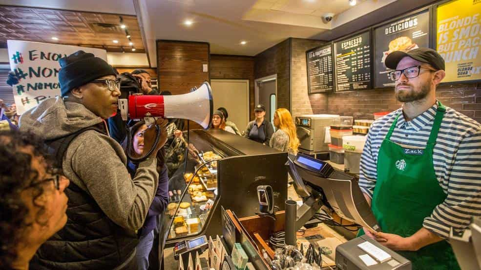

This account syndicates news from other media outlets.


Previously: Starbucks Is Imploding Because Two Black Men Didn’t Want To Leave A Store
You don’t have to be a Starbucks customer to use the bathroom.
Starbucks informed employees of the official policy in a letter sent to them on Saturday, spelling out that “any person who enters our spaces, including patios, cafes and restrooms, regardless of whether they make a purchase, is considered a customer.”
Portions of the letter were first published in The Wall Street Journal.
Starbucks employees are told to follow company procedure in dealing with customers who might behave in a “disruptive manner.” If there is a perception of imminent danger or safety concerns, employees are still urged to call 911.

And in a policy statement shared with USA TODAY, the company indicated that “When using a Starbucks space, we respectfully request that customers behave in a manner that maintains a warm and welcoming environment by:
Starbucks executive chairman Howard Schultz had already signaled the policy change at an event hosted by a Washington D.C. think tank on May 10. Schultz said at the time that, “We don’t want to become a public bathroom, but we’re going to make the right decision 100% of the time and give people the key, because we don’t want anyone at Starbucks to feel as if we are not giving access to you the bathroom.”
In April, two African American males were arrested in a Philadelphia Starbucks after one asked to use the restroom but was told only paying customers could use them. After he sat down with his friend while waiting to be joined by a business associate for a meeting, the police came and arrested both, sparking national outrage.
Starbucks CEO Kevin Johnson subsequently apologized to the victims and reached an undisclosed financial settlement.
The company has also just apologized to a Latino customer for a racial slur that was allegedly written on his drink cup in a suburban Los Angeles Starbucks.
Starbucks is going ahead with plans to close its more than 8000 company owned U.S. stores and corporate offices on the afternoon of May 29, so employees could receive anti-bias training.
Don’t Miss: 19 Photos That Show How Starbucks Is Destroying Coffee